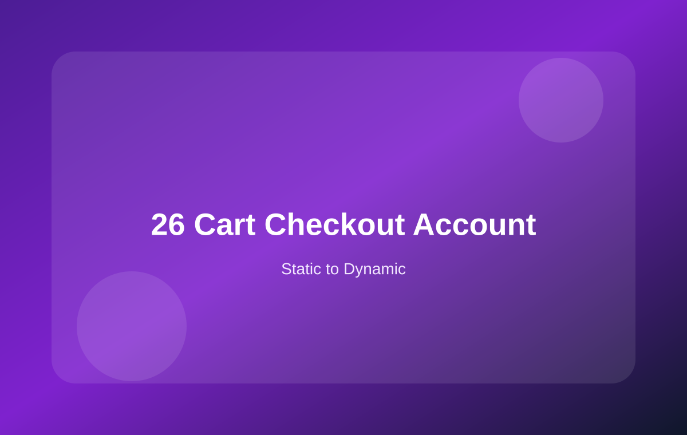

26 购物车、结账和账户页：先稳定流程，再优化外观
更详细地说明购物车、结账和账户页如何接入 WooCommerce，哪些能先改样式，哪些不建议过早重写。

本页学习重点
购物车、结账、账户页为什么要谨慎
购物车涉及数量更新、小计、优惠券、运费、库存校验。
结账涉及账单地址、配送方式、支付方式、订单创建。
我的账户涉及登录状态、订单、地址、下载、客户隐私。
建议：先默认流程，再视觉优化
| 页面 | 优先保留 | 可以先优化 | 后期再改 |
|---|---|---|---|
| Cart | 数量更新、优惠券、小计、运费计算 | 表格样式、按钮、空购物车提示 | 完全自定义购物车逻辑 |
| Checkout | 字段验证、支付、订单创建 | 字段间距、标题、订单摘要样式 | 重写支付和下单流程 |
| My Account | 登录、订单、地址、下载 endpoints | 菜单样式、订单表格、状态 badge | 重写账户权限和订单查询 |
你的静态页面如何继续发挥作用
作为视觉参考
保留你现在的卡片、按钮、表格、状态标签、账户菜单设计，用 CSS 去覆盖默认 WooCommerce 输出。
17-cart-page.html：购物车视觉参考18-checkout-page.html：结账布局参考19-account-orders.html：账户中心参考
作为模板拆分参考
当你熟悉默认流程后，再考虑局部覆盖模板，而不是一次重写整个页面。
- 先改 CSS
- 再改局部模板
- 最后才考虑自定义逻辑
上线前必须测试的流程
- 加入购物车是否成功
- 购物车数量更新是否正确
- 优惠券是否能正常应用和移除
- 运费是否能根据地址变化
- 结账字段验证是否正常
- 支付成功和失败是否都有正确反馈
- 订单邮件是否收到
- 账户订单页是否能查看订单
- 手机端结账是否顺畅
本页总结
购物车、结账和账户页优先保证流程稳定。你的静态页面可以作为视觉参考，但真实交易逻辑建议先保留 WooCommerce 默认流程。